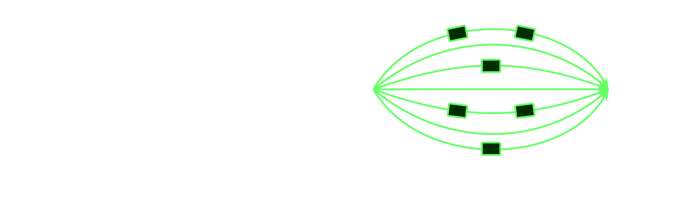
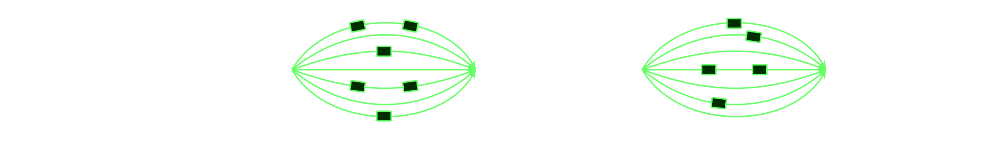

distributed-computing
The distributed-computing pattern menu for metatron — distribution is a theorem, not a feature. The stream-ring laws (Thm 5 / 6 / 16 / 17 / 19) decide *which* fold can ship, and the /m/math/cat machinery realizes it: the declared theories and process laws on object::T / morphism::T, Law.Helper's *computed* combiner, and the plan::T vocabulary (cut / where / spans) built by PlanBuilder, applied by PlanInterpreter, and emitted by Shard — the body of the law_shard rule in the machine's rewrite pool (instset().rewrites(); the local law rules are /m's, law_shard and law_bsp are catRewrite's; law_bsp, the superstep of entry N, is Bsp). One row per pattern (A–W): its algebraic law (the latex), the mtron you write **before** the rewrite (the pre-write motif), and the sharded layout the rewrite emits (the rewrite motif). A play button marks a pattern implemented today. A span range is a **second index set** (the *run partition*), documented below with the seed partition it complements. TRIGGER: When reasoning about distribution, sharding, or fan-out in metatron; when adding or explaining a distributed-computing pattern; when you need the law and the pre-write / rewrite motifs for one of the menu's entries (A–W); when wiring a plan::T / PlanBuilder / PlanInterpreter / Shard / Law.Helper combiner.distributed-computing-mtron.md
distributed computing — the pattern menu
Distribution in metatron is not a subsystem you add: it is what a fold's declared algebra already licenses. A
reducer ships, splits, and recombines because its carrier declares a law, never because a feature was turned on.
The menu below (A–W) catalogues those laws: each entry is a pattern, its algebraic law the reason it is sound, its
pre-write motif the mtron you write, and its rewrite motif the sharded layout the rewriter emits. The premise is
docs/design/distributed-patterns-through-algebra.md ("distribution is a theorem, not a feature"); the first
realization is law_shard; the substrate and its gaps live in docs/design/distributed-computing.md. This doc is the
reference: what to build next, and why each item is sound.
the substrate — the constructions a pattern rests on
A distribution pattern is a small amount of declaration on top of machinery that already exists. Before reading the menu, fix the five pieces a row names:
| type | where | the role it plays |
|---|---|---|
machine::T | ~/ | the topology. push/pop is a call stack; a child machine is a subproblem; a mini-cluster is a child machine + the peers its network declares + the URI space they share. The authority is the boundary — an address names work this machine owns or work a peer owns. |
network::T | ~/network | the reach. roster is what the system knows (connectionless endpoints); peer is what this machine has dialed. Knowledge is inherited, reach is not. A peer::T carries a host (where to dial it back) — the marker that makes it a fan-out target; an inbound accept has none and never receives a shard. |
rewriter::T | ~/compiler/rewriter | the stage. The compiler's first atomic pass lowers code::T → code::T to a fixpoint over the machine's rewrite pool (instset().rewrites()); fixpoint_rewriter::[max=>N] is one such stage. A distribution rule is one rule of that pool, applied in place — the local law rules live in /m, law_shard is catRewrite's, and every emitted layout is itself re-planned where it lands. |
instset::T | /m/math/cat | the declaration surface. object::T holds a type's structural theories; morphism::T holds an inst's process laws, form, class, and analysis; path::T lifts code to a vertex whose out-edges are the live rewrite rules, each a plan::T. lower(plan::T) and bind(plan::T) are the two applications. |
law::T, plan::T, path::T | — | the engine. A plan::T assembles [name, cut, where] (a value, validated against its axes' law obligations) and lowers to a layout; the combiner a fold's partials recombine through is read off the law::T declarations — never named, always computed. |
Law.Helper.combiner(keyed, laws) is the one function that decides a fold's recombination:
- a fold that declares
monoidic+commutativeis its own combiner (sum,prod); - a fold defined by its
derivationrecombines through the fold that defines it (count ↦ sum,order(s) ↦ kmerge(s), and a bareorder()↦kmerge(): an omitted argument is noobj, which the derivation'ss{?}admits); - a keyed fold
group([k ⇒ h])recombines pointwise —sum()==[_=>combiner(h)]— which no single edge names.
Shard extends a cut over a select that keeps a prefix (==[{k}_]) when the combiner declares causal, so the
combiner of order(s)==[{k}_] is kmerge(s)==[{k}_] (entry K).
the theorem bindings
"Which law the anchor obeys" is the whole decision. The stream-ring theorems are the implementation sites:
| theorem | statement | meaning for distribution |
|---|---|---|
| Thm 5 | streams are atemporal | no required order of apply/merge — remote placement is always safe, and the fan-out may be parallel |
| Thm 6 | \(ca \cdot 1b = 1a \cdot 1b \cdot c1\) | the coefficient floats through non-reduce chains — elementwise work is independent, replicate it |
| Thm 16 | reducers are temporal | the fold is the one synchronization point (the barrier) |
| Thm 17 | \(c1 \cdot 1a \neq 1a \cdot c1\) for \(a \in \mathcal{F}_r\) | floating stops at a reducer — the fold is the cut |
| Thm 18 | \(\langle\mathcal{F}_r, +, \cdot\rangle\) is a near-ring (left distributive) | a reducer distributes over a fan-out, \(c(a+b) = ca + cb\) — the combiner's algebraic home |
| Thm 19 | monoidic reducers are idempotent and semi-right distributive, \((a+b)c = (ac+bc)c\) | a commutative-monoid fold splits, merges, and re-applies — the shard is sound, not merely partitioned |
| Thm 21 | \(\langle\mathcal{F}_r, \cdot\rangle\) is functionally closed | serial folds compose — a fold after a fold is a fold, so the master's combiner.tail and J's finalizer stay reducers |
These seven are the bindings that matter for distribution; the rest of the paper's theorems describe the function rings the shapes live in. The full paper is Stream Ring Theory.
the route vocabulary — the distribution shape
The plan's where states three axes — where (?place), how far and how wide (?hop), and what counts as one
share (?split) — and the shape is their consequence, not a fourth key. law_shard states them:
[place=><[local]>, hop=>0, split=><stream>] [-- the origin's tail: the home place, no depth, strided --]
[place=><[peer]>, hop=>1, split=><stream>, span=>[seed, …]] [-- the fan-out: the dialed set, one level, strided --]
| shape | derived from | obligations on a cut shipped to it |
|---|---|---|
local | the home place alone, no depth | — |
peers | the dialed set at no depth | monoidic, commutative |
tree | the dialed set at a depth of one or more | monoidic, commutative |
shuffle | a keyed ?split | monoidic |
space | a landing (to(<space>)) | — |
none | nowhere (the unit law's transform) | — |
PlanBuilder.create() validates $\texttt{obligations} (\texttt{place}, \texttt{hop}, \texttt{split}) \subseteq
\texttt{cut.laws}$; a cut shipped to a decision and re-applied at home must declare every law the axes demand, or the
plan refuses to build. The legacy shape/target encoding is still read for one cycle; the plans no longer write it.
?hop=height{arity} — how far, and how wide
?hop is a tree shape: the height (how many times the rule may re-plan the code it produced) and, as a leading
coefficient, the arity (how many children one node may fan out to). A bare ?hop=n states the height and leaves the
arity at the receiver's own out-degree — today's behaviour — and the two arities no coefficient can render ride the pair
form: [h,1] is a chain (one child per node, monoidic alone, order preserved).
| written | height | arity | realized shape |
|---|---|---|---|
0, {0}n, [n,0] | 0 / n | 0 | the identity — D(c) = c, unchanged |
1 | 1 | the out-degree | star (the default's one level) |
n | n | the out-degree | free/irregular tree |
[n,1] | n | 1 | chain / pipeline — n lanes in a line |
{2}3 | 3 | 2 | binary tree, at most 2 children/node |
{2,4}3 | 3 | 2..4 (the cap 4) | elastic: fill what is live up to 4 |
The arity caps the fan-out: each node takes the first w lanes of the emitter's lane order (home-first, then the
resolution order — deterministic, never rotated per node), still clamped by min(shares, seed). A node with fewer live
targets takes what there is. The form is restated, never the number: the emitted lane's budget is the same arity
with the height decremented ({2}3 ⇒ {2}2 ⇒ {2}1 ⇒ 0, [3,1] ⇒ [2,1] ⇒ [1,1]). It is stated on the lane's first
instruction — the start(part) of a seeded lane, the first run instruction otherwise — so a human and a re-planning
peer read the metadata in one place. A leaf states the bare ?hop=0; no copied instruction is stripped of a budget it
carries (the earliest statement wins, so the head is authoritative); and the master states none (its head is the
layout's branch).
?place — where
The place set, as a value: a list is a set of designators, a rec carries weights, and a trailing/leading
coefficient is that designator's demand (how many lanes it takes — a share is a lane, so demand is both data weight
and concurrency). Repetition is multiplicity: [//ginger,//ginger,//booger] is ginger twice.
| designator | resolves through |
|---|---|
local | this frame's own place (the addressless eval()) |
peer | the dialed set (host-bearing, online, serves-positive) |
# | every reachable place the other entries did not name |
//host[:port] | the roster's place (a redirect) |
scheme://host:port | one authority, as written |
?place=[local,peer] is S (the master takes a share); [{4}local] is four home lanes on a peerless machine, still a
fan-out (it demands the off-machine merge's laws); local=>0 is the explicit exclusion. Exclusion is omission.
A roster machine is knowledge, not reach: it is a fan-out target only when the author names it (//host) —
peer is the dialed set. A declared-but-undialed machine alone leaves law_shard the identity.
?split — what counts as one share
?split | lowered? |
|---|---|
stream (the default) | yes — today's stride division, the layout law_shard has always emitted |
copy | only behind idempotence — one part, the whole seed on every lane; legal only when the cut's combiner declares idempotent, else the unchanged chain |
block, key, owner, index | decline — their premises (order, a key, an addressed seed, a generator) are not held yet, so the decision is the identity, never a plausible-looking reorder |
An unreadable ?split is refused loudly (the key and the text), never defaulted to stream.
the run partition — a span range is an index set (menu entry V)
?split partitions the seed; a span range partitions the run — menu entry V, the generative run. (P,
"computed seeds", is its sibling over a generated data index space; V's index is the exponent.) A coefficient {m,n}
on an instruction is the sum of its unrolls, a^[m,n] = a^m + … + a^n, and the unrolls are independent terms — so when
the seed is a singleton and the run carries a closed range, law_shard factors the unroll index: one lane per
distinct place, each carrying the whole seed and the run with its span narrowed to that place's share ({p_i,q_i},
a contiguous subrange chosen by WORK — a lane walks its runs from the seed, each step once, so a share {a,b} costs the
b steps it walks and the b - a + 1 runs it emits, and the lane nearer the top takes fewer runs: {0,4} over two
places is {0,2} and {3,4}). When the run ends at a cut, each lane folds its own unrolls through the cut, so one
partial per lane travels home, and the master recombines the partials through the cut's combiner.
start(0).{0,10}plus(1).sum()
⇒ branch?<={0}(<p_1> => start?hop=0(0).{0,6}plus(1).sum(), <p_2> => start?hop=0(0).{7,10}plus(1).sum()).sum()
No typed cut is needed for the cutless form: a run with no cut after it ships its unrolls whole, and the chain's tail
(the first non-floatable instruction after the run) runs at home over the branch's bag, so a span the typing probe
cannot thread still plans (branch(...) alone when the tail is empty). A point span ({3}) is a lone compose chain and
an open range ({*}, {+}) has no last unroll: neither is an index set, so both decline to the identity. v1 factors
one axis per run — the seed first, the run when the seed is one obj; the product (seed × unroll) is the tree's next
level, never a new grid. The run partition is not a ?split kind: {w}part weights the seed, while a run share is
a range — one per place, since a branch has one lane per key.
After a cut, the seed is one obj. A fold answers one obj (a gather whose rng is one), so the run after a cut has
nothing to deal; its multiplicity is a span range in the run. The branch takes that obj whole and copies it to every
lane (?split=copy), and each lane walks its own share of the range and folds it through the cut. The copy needs no
idempotence: the shares are disjoint, so no term is counted twice. The obj stays one across the instructions that stay
home between the fold and the run, as long as each hands on at most one obj for the one it takes (a one-obj dom and
range, no copies, no unrolls): sum().side(plus(1)).{0,3}plus(1).sum() keeps side home and still splits the span.
An instruction whose range may be many (print and to declare A{*}<=A{?}) leaves a bag of unknown size, which the
branch deals. A point is an index set too: step{p} is p copies of one term, and points add across a branch
(a{p} = a{p_1} + a{p_2}), so the lanes take even shares of the copies — id{5}() over two places is id{3}() and
id{2}(), each lane folding its copies through the cut. A run after a cut with neither a span range nor a point stays
home: dealing one obj would hand the whole run to one lane — unless the run turns the one obj into many with a
flatmapper. The flatmapper stays home, with whatever hands on one obj for one before it, and the rest of the run
deals its bag, so order(neg()).merge().plus(1).sum() merges the sorted lst at home and ships plus(1).sum()
(branch().kmerge().merge().branch().sum()), and K's chained top-k maps and unrolls the lst at home
(==[{4}mult(-1)]>-) before its second sort ships.
{1,2,3,4,5}.plus(1).sum().{0,3}plus(1).sum()
⇒ branch?<={0}(<p_1> => start?hop=0({1,4}).plus(1).sum(), <p_2> => …).sum()
.branch?<=int{*}&split=copy(<p_1> => {0,1}plus?hop=0(1).sum(), <p_2> => {2,2}plus?hop=0(1).sum(),
<p_3> => {3,3}plus?hop=0(1).sum()).sum() [-- 41+22+23 = 86 --]
the branch's gather grain — the dom coefficient
The dom is a tid, not a number: inst.dom() answers the domain's type-id and inst.dom().c() its coefficient
(the multiplicity). The arrow spelling is sugar — A<=B is dom=B&rng=A (the left is the rng, the
right the dom) — so ?<=T{n} states the dom coefficient {n} with the rng at its default, and the canonical
render order is rng<=dom.
The instruction's own default is {?}: a bare branch() feeds one obj at a time (local, per-object semantics). The
shipment grain is the dom coefficient a rewrite (or an author) states on a branch: {n} pages (a buffer of
at most n per call), {*} gathers the whole lhs once — a barrier — and a band {2,5} keeps its band. The
distributed rewrite states {*} on the branch it emits where it wants a barrier (the computed-bag broadcast); that
is an optimization of the plan, never a property of the instruction. The branch never combines pages — the chain's
outer fold does, so the recombination law is still the cut's gate. An ORDERED branch's members run over what a call
holds as a keyed lane does, start(bag).member: under a page or the barrier a map still meets one obj at a time and a
fold meets the whole bag, so {1,2,3}.branch?<=int{*}(sum(),count()) is {6,3} where the per-object default answers
{{4}1,2,3}, and a map's terms are the same under every grain (0.{4}branch?<=int{*}(plus(1),id()) is still the
binomial row {4,{4}3,{6}2,{4}1,0}).
A split partitions the branch's shipment, not the call: under a rewrite's {*} branch, branch?split=part deals
the whole lhs across its keys (each lane's program runs once over its part); under the instruction's per-object
default each call holds one member, so a single-member deal lands in the first slot. The run partition's lanes are
seeded, so their branch takes no lhs and neither the stream nor the barrier applies — the cheapest broadcast. A page
size belongs with the other shipping knobs on the head, next to ?hop, never in the partition: it changes the number
of round trips a lane's share costs, not how the index set was split.
the menu
The centerpiece: every pattern, the law that makes it sound, and what it does; then the mtron each one rewrites. A ▶ play button = implemented today (it plays the pattern's cast); no play button = the law is sound but the lowering is not yet written.
| key | play | pattern | law | description |
|---|---|---|---|---|
| A | homomorphism shard | \(h(a \uplus b) = h(a) \oplus h(b)\) | each place folds its part; the master recombines the partials through the computed combiner | |
| B | data-local shard | \(\mathrm{from}(p) = \sum_a \mathrm{from}_a(p)\) | the code moves to the data: each authority folds what it holds | |
| C | authority push-down | \(\mathrm{from} \cdot \mathrm{count} \mapsto \mathrm{native\_count}\) | B with one owner: the fold runs where the data lives, natively (Thm 5 and a pure chain) | |
| D | parallel fan-out | \(\langle x\rangle(a+b) = \langle x\rangle a + \langle x\rangle b\) | the transport, not a new fold: every lane a virtual::T, so the master pays max RTT, not Σ RTT | |
| E | tree reduction | \((a+b+c+d)\cdot r = ((a\cdot r + b\cdot r)\cdot C + (c\cdot r + d\cdot r)\cdot C)\cdot C\) | ?hop=height{arity}: each interior node re-plans its part and recombines a level | |
| F | ordered fold | \(a \cdot (b \cdot c) = (a \cdot b) \cdot c\) | associativity alone: a lst-partitioned fold carries the running total (streams never shard) | |
| G | keyed reduce | \(\mathrm{combiner}(\mathrm{group}([k \Rightarrow h])) = \mathrm{sum} \cdot \mathrm{select}([\_ \Rightarrow \mathrm{combiner}(h)])\) | partials merge by key; the combiner is pointwise, computed from h's | |
| H | redundant / hedged shards | \(x \oplus x = x\) | an idempotent fold lets a part ship to r peers and every reply fold; otherwise hedge, first wins | |
| I | span/route interpreter | \(\mathrm{plan} \mapsto \mathrm{layout}\) | the infrastructure: PlanInterpreter (via Shard) lowers a plan's axes to a layout | |
| J | algebraic aggregates | \(\mathrm{mean} \equiv (\mathrm{sum}, \mathrm{count}) \cdot \mathrm{div}\) | pointwise tuple partials; the finalizer runs once at the master | |
| K | limit / top-k push-down | \(\mathrm{take}(k) \cdot \oplus = \mathrm{take}(k) \cdot \oplus \cdot \mathrm{take}(k)\) | each lane keeps its own top k, and the master merges and keeps k | |
| L | mergeable sketches | \(\hat h(a \uplus b) = \hat h(a) \oplus \hat h(b)\) | a sketch fold that declares its monoid theory plugs into A, E and H | |
| M | matrix multiplication | \(A \cdot (B + C) = A \cdot B + A \cdot C\) | O plus an addressed union (rows), A with the matrix sum (inner k), G over block keys (2-D) | |
| N | iterative / BSP | \(x^{*} = x \vee f(x) \vee f^{2}(x) \vee \cdots\) | a superstep, repeated: law_bsp deals each pass; the merge is the boundary | |
| O | broadcast constants | \(ca \cdot 1b = 1a \cdot 1b \cdot c1\) | a constant rides as an argument of the floatable run: no fan-out change (Thm 6) | |
| P | computed seeds | \([0, n) = \uplus_i \mathrm{index}_i\) | the index space is split, not the data: one O(1) message per peer, nothing shipped | |
| Q | monad migration | \(\mathrm{authority}(m)\) | ship the monad, not the value: the continuation travels, law_shard per step | |
| R | durable results | \(\mathrm{id} : \mathrm{partial} \mapsto \mathrm{address}\) | each partial is written to an address: a space and its shard_result::T | |
| S | master-participates | \(\bigoplus_{i=0}^{k} a_i \cdot r\) over \(\{\mathrm{master}\} \cup \mathrm{peers}\) | the master folds its own slice, a lane at distance zero, and ships the rest | |
| T | reference frame migration | \(\mathrm{move}(a) \ldots \mathrm{move}(b) \ldots\) | the frame moves, not the data: the tail ships as a program and the value snakes back | |
| U | profile collation | \(\hat{p}(a \uplus b) = \hat{p}(a) \oplus \hat{p}(b)\) | each lane's profile ships home and nests under the master's, timed around the branch | |
| V | generative run | \(a^{[m,n]} = \sum_{k=m}^{n} a^k\) | a span range or a point is an index set: the lanes split the unrolls by WORK, or the copies evenly | |
| W | embarrassingly parallel | \((a + b) \cdot f = a \cdot f + b \cdot f\) | no cut: each place runs the floatable run on its share, and the branch's merge brings it all home |
the mtron motif rewrites
Each pattern's pre-write motif, the mtron before the rewrite fires, and its rewrite, the emitted layout: one
branch keyed by place (s_i a lane's program, p_i a peer, part_i the factor of the seed bulk the branch deals
lane i). The names are placeholders and the rows are schemas, not literal runs; a cell in plain prose describes a motif no
single expression shows.
| key | pre-write | rewrite |
|---|---|---|
| A | {1,2,3,4}.plus(1).count() | branch?<={0}(<p_i> => start?hop=0(part_i).plus(1).count(), …).sum() |
| B | */usr/data/+/current.plus(1).sum() | branch(<a_i> => from?hop=0(</usr/data/+/current>).plus(1).sum(), …).sum() |
| C | *<ws://host:8555/n/+>.plus(1).sum() | branch(<ws://host:8555> => from?hop=0(</n/+>).plus(1).sum()).sum() |
| D | any shard | branch(<p_i> => s_i, …).combiner, every lane a virtual::T |
| E | {1,…,8}.plus(1).sum?hop=2() | a nested start?hop=n-1(p_i)… at each interior node: the dial graph is the tree |
| F | a lst-partitioned fold | a pipeline: the running total travels neighbor to neighbor |
| G | {1,2,3,4,5,6}.group([mod(3)=>sum()]) | branch?<={0}(<p_i> => start?hop=0(part_i).group([mod(3)=>sum()]), …).sum()==[_=>sum()] |
| H | a part shipped to r peers | every reply folds (at least once); non-idempotent: hedge, the first reply wins |
| I | [{1,2,3}.plus(1).sum()]==[as(cat:path::T)]==[lower(>>law_shard)] | the plan's axes lowered over a real span [(lo, hi, role)] |
| J | {...}.mean() | tuple partials; the finalizer once at the master |
| K | {...}.order(s)==[{k}_] | lanes order(s)==[{k}_]; the master kmerge(s)==[{k}_], as kmerge is causal |
| L | {...}.hll() | A, E or H once the sketch declares its monoid theory |
| M | mtrx::[...].mult(mtrx::[...]) | O + an addressed union (rows); A with the matrix sum (inner k); G over block keys (2-D) |
| N | x.repeat?<=A{*}(code=>f,until=>p) | law_bsp: repeat?<=A{*}(code=>branch?<=A{*}&split=part(<p_i> => f?hop=0, …),until=>p) |
| O | {...}.plus(B).sum() | the constant B rides as an argument of the floatable run |
| P | Monte Carlo: a count and an RNG seed per peer | one O(1) message per peer |
| Q | a remote read mid-chain | law_shard per step: the continuation ships |
| R | to(</usr/job/round/shard>) | a space, and shard_result::[authority, round, status, value] |
| S | {1,…,8}.plus(1).sum?place=[local,peer]() | the master's slice is a lane at distance zero; k−1 ship |
| T | {1,2,3}.plus(5).move(//host/a).plus(2).sum() | cut at the move, move(<host>): the tail ships as a program |
| U | {1,2,3,4,5}.plus(10).sum().profile()>>format | profile_collate(branch?<={0}(<p_i> => start?hop=0(part_i).plus(10).sum().profile(), …))>>format |
| V | start(0).{0,1000}plus(1).sum() | branch?<={0}(<p_1> => start?hop=0(0).{0,p}plus(1).sum(), <p_2> => …).sum(), narrowed by WORK |
| W | {1,…,8}.complex_computation() | branch?<={0}(<p_i> => start?hop=0(part_i).complex_computation(), …), and no combiner |
Legend. ▶ = implemented (A done; D done 2026-10-26; E, G v1 done 2026-10-28; S done 2026-10-28 —
the axes' local designator, ?place=[local,peer]; O free today — it needs no plumbing; V v1 done 2026-11-12 — a
singleton seed and a closed span range — and 2026-11-18 every cut plans its run; see the run partition). P
is the data-index-space sibling of V: same "nothing ships" spirit, but its index is a generated data space, while
V's index is the exponent. W done 2026-11-19 — the free law with no cut at all, right distributivity alone: a
dealt seed ships its floatable run and only the branch's merge recombines (an index set was already the cutless run
partition). Floating is Inst.isPure, so an instruction handed an effect keeps the run home.
K done 2026-11-20 — top-k is order(s)==[{k}_], the select of id() slots that keeps the first k positions, and the
cut absorbs it because kmerge declares causal; see K below.
N done 2026-11-22 — law_bsp, its own rule beside law_shard (Marko): a whole-frontier repeat?<=A{*} whose code
is pure and floatable has its code dealt over the dialed peers on every pass, the loop and its predicates home; see N
below.
An empty box is not "unsound": the law holds, the lowering is unwritten. F is struck for streams (order lives in
lst, never a bag); M is a note; I is infrastructure. C needs only Thm 5 and a pure chain. T is the machine
semiring's groupoid, the stream ring's process dual. V's unrolls are independent terms (Definition 3), which is why
they split. U done 2026-11-19 — the instrumentation row: its \(\oplus\) nests reports by place, a keyed union whose
figures add or fold, so the report is a commutative monoid. Each lane ends in profile() and answers its own report,
and the master's run is timed around its branch (profile_collate(branch(…))), so the master's report holds the one
number no lane can supply, the gather wait; each lane's report nests under it at place, keyed by the machine that
made it. Every axis a run factors collates: a seed's members, a computed bag, a span's unrolls (V). A tree nests
like the tree: an interior node collates its own places, and the tree's figures (depth, leaf, level and the
critical path) fold bottom-up as each node collates. >>format nests like the tree too: master, then each place
under a header of its own (its apply, and a leaf's objs or a node's count of places), the place's report one level in.
A node's body leads with the summary over its places (objs and apply per place, the straggler, imbalance as max ÷ mean
apply, the gather wait, and a provisional efficiency, Σ lane apply ÷ (k × gather wait)), then its own run.
the taxonomy — the menu as a tree
The twenty-three entries are not a flat list: they fall out of two axes — the data-side law the anchor obeys (which fixes the route shape), and the location-side question of where the work lives — plus orthogonal rules that multiply any fan-out and composites that build on the rest. The table keeps the A–W lettering stable.
distribution — the menu (A–W)
├─ by the anchor's law (the data-side theorem → the route shape)
│ ├─ free · floatable (Thm 6) → O:✅ W:✅
│ ├─ star · comm. monoid (Thm 19) → A:✅ E:✅ G:✅ K:✅ J L H
│ ├─ pipeline · associative → F
│ └─ shuffle · keyed → (G's hash-route; M(3))
├─ by the location (native · delegation — where the work lives)
│ └─ B C Q P T:✅
├─ orthogonal (multiply any fan-out)
│ └─ D:✅ S:✅ U:✅ V:✅ (the run's own multiplicity)
└─ composite & substrate (built from the above)
└─ N:✅ R M I
The four top branches read the two axes of docs/design/distributed-patterns-through-algebra.md:
- the anchor's law is the data-side theorem, and it is the route shape:
free(floatable, Thm 6) replicates the run with no coordination (Ocarries a constant along, andWis a run with no cut at all);star(commutative monoid, Thm 19) scatters, partial-reduces, and gathers —Ais the one engine, andE/G/J/K/L/Hare its refinements;pipeline(associative) carries the running total;shuffle(keyed) co-locates the key (G's future hash-route, and M (3)). - the location is the machine-side question — native / delegation:
Bmoves the code to the data,CisBwith one owner,QisCper step,Ppartitions the index space instead of data. - orthogonal multiplies any fan-out:
Dships every round trip in parallel (max RTT),Skeeps a slice home, andVfactors the run's own multiplicity — a closed span range — across the same fan-out, each lane carrying the whole seed and a narrowed span (?hoprecurses the remaining range). - composite & substrate builds on the rest:
Niterates a dealt superstep (law_bsp),Rwrites results to a spatial address,Mdecomposes into O / A / G over three index splits,Ilowers the plan's axes to a layout.
Implemented is a ▶ play button in the table, a ✅ (green) in the tree; white = the law holds, the lowering is unwritten.
the implemented layouts, spelled out
The done patterns, with the lane/master forms written in full. law_shard (A) is the one engine they all lower
to; the rest specialize it. Every run that ships is one branch keyed by place, and the master recombines the lanes'
partials through the combiner: the chain expands into one lane per place and contracts at the fold.

-
Every cut plans the run before it. A chain that folds more than once ships each run through its own branch; each combiner brings the computation home, where the next run starts:
branch(<p_i> => <run_1>.<fold_1>, …).<combiner_1>.branch(<p_i> => <run_2>.<fold_2>, …).<combiner_2>. A run never reaches back past the cut before it, a run that declines stays as written, and the tail after the last cut stays home. The chain expands and contracts once per cut:
-
A literal seed is dealt by the plan. Each lane carries its own part,
<p_i> => start(part_i).<program>, so the listing shows what each place runs. With nostartleft at home the branch takes nothing: it is the initial form,branch?<={0}(…). -
A computed bag stays home and is dealt when the branch runs. Whatever cannot float before the run (a gathering
repeat?<=A{*}, whose own codelaw_bspdeals instead; an effect) is the prefix, which runs where the code stands:<prefix>.branch?<=T{*}&split=part(<p_i> => <program>, …)(repeat() [[ plus(10).order ]], Marko 2026-11-05). Its dom coefficient is{*}by default (the barrier); a stated one pages it — see the branch's gather grain. -
A run partition replicates the seed and narrows the exponent. A seeded lane carries the whole seed and its own subrange of the unroll index; there is no branch lhs, so neither the stream nor the barrier applies. After a cut the seed is computed, so the branch copies it to every lane (
branch?<=T{*}&split=copy(…)). See the run partition. -
A place with n shares is keyed
?split={n}part, and?split=copyhands every lane the whole seed. -
A lane ships raw. The master's compiler never binds a lane; each is compiled where it runs (server side for a host, by that machine's compiler for a machine path).
A — homomorphism shard (sum, prod, count, order(s), rec sum)
master: branch?<={0}&split=part(<p_1> => start?hop=0(<part_1>).plus(1).count(), …,
<p_k> => start?hop=0(<part_k>).plus(1).count()).sum()
The combiner is computed, never declared — see Law.Helper.combiner above:
| fold | combiner | why |
|---|---|---|
sum, prod | itself | declares monoidic + commutative |
count | sum | count ≡ map(1)·sum |
order(s) | kmerge(s) | order(s{?}) ≡ split([_])·kmerge(s{?}), so a bare order() recombines through kmerge(); kmerge declares monoidic + commutative |
rec sum | itself | the deep merge's fold declares monoidic + commutative — a lst is its atom, so colliding values bag in any order |
The cat graph answers lazily: |count?int<=A{*}().as(morphism::T)>>analysis>>combiner is
/m/inst/sum?rng=/m/int&dom=/m/int{*}. mean (magmadic) and str sum (not commutative) correctly do not shard.
order is the distributed sort. The lane sorts its shard and the master k-way-merges the runs — the same shard,
with kmerge as the combiner instead of sum:
lane_i: start?hop=0(<part_i>).order(>>) [-- each shard sorts by its key --]
master: branch?<={0}&split=part(<p_1> => start?hop=0(<part_1>).order(>>), …).kmerge(>>)
order(>>) on a stream of single-key recs sorts by value, and kmerge(>>) merges the sorted partial runs — a k-way
merge that re-reads the multiplicity, so two 1s in different shards merge into {2}1, never [1,1]. The same
kmerge recombines a keyed sort: under group([k⇒order(>>)]) each key's sorted partials bag whole and merge per key
(entry G).
D — parallel fan-out (virtual-threaded lanes, max RTT)
Every keyed lane of the branch is a virtual::T, submitted before any is awaited — each returns immediately and waits
on its own thread, and the branch then awaits each lane through its rhs. The master pays max RTT, not Σ RTT. A remote lane ships its program through its place's eval (the client's mini-instset override),
bound when the lane runs rather than when the plan is made, and the result hangs off rhs as a lazy auto over the
future.
E — tree reduction (?hop=height{arity})
root: {1,…,8}.plus(1).sum?hop={2}2() [-- height 2, at most 2 children per node --]
⇒ branch?<={0}&split=part(<p_1> => start?hop={2}1({1,…,8}).plus(1).sum()).sum()
on p_1: branch?<={0}&split=part(<p_2> => start?hop={2}0({1,3,5,7}).plus(1).sum(),
<p_3> => start?hop={2}0({2,4,6,8}).plus(1).sum()).sum()
The axis resolves per run, in chain order — the first statement among the run's own instructions wins, else the axis
the run before it resolved, else the plan's tree route (default height 1, the star). A statement governs from where it
stands onward: start?hop=0(…) keeps a whole chain home, while ?hop=0 on the last fold keeps only that run home. The
?place and ?split axes resolve the same way. A peer re-plans its part because applying a code compiles it
(Machine.applyCode). The lane restates the form, never the number (see ?hop): {2}2 ⇒ {2}1 ⇒ 0. A chain ([h,1])
hands the whole part to one child, so the tree is a line.
?hops is the deprecated pre-singular spelling of the same key: it is read for one cycle, ?hop wins at the same
position (both keys on one instruction), and the earliest statement wins across positions.
G — keyed reduce (group([k ⇒ h]))
lane_i: start?hop=0(<part_i>).group([mod(3)=>sum()]) [-- [1=>1,0=>3,2=>5] --]
master: branch?<={0}&split=part(<p_1> => start?hop=0(<part_1>)…, <p_2> => …).sum()==[_=>sum()] [-- [1=>{1,4},…] → [1=>5,…] --]
The combiner is pointwise, computed from h's (Law.Helper.pointwise). The rec sum is the deep merge: colliding
partials append into a bag, and a bulked partial reads as its copies (the lanes' bag bulks equal ones). ==[_=>C] is
select, the per-key fold. A lst is an atom of the merge, so an order's sorted partials bag whole per key and
kmerge merges the runs.
K — top-k push-down (order(s)==[{k}_])
lane_i: start?hop=0(<part_i>).order(s)==[{k}_] [-- each lane keeps its own first k --]
master: branch?<={0}&split=part(<p_1> => start?hop=0(<part_1>)…, <p_2> => …).kmerge(s)==[{k}_]
Top-k needs no instruction of its own. A positional select keeps only the positions its pattern covers, and a span
on an entry lays that many slots along the select's bracket, so ==[{k}_] is the lst's take: [3,1,2]==[{2}_] is
[3,1], and {5,3,9,1,7}.order()==[{2}_] is [1,3]. The cut absorbs that select when the cut's combiner
declares causal: the first n of its output depend only on the first n of each input, so the longer cut recombines
through the combiner followed by the select, combiner(r·t) = combiner(r)·t, computed rather than declared. kmerge
is causal, since the first k of a sorted merge draw only on the first k of each run, so each lane sorts its part,
keeps k and ships at most k members, and the master merges the runs and keeps k. It is not a poset law: kmerge
is not monotone in the prefix order ({[1],[3]}.kmerge() is [1,3], no prefix of {[1,2],[3]}.kmerge(),
[1,2,3]).
The select must keep a prefix and change nothing, every slot a bare id() (_ is its sugar). A select that maps
(==[{2}+1]) would map once in each lane and again at home, so it stays home, as do a point that copies
(id{2}()) and a keyed pattern (==[?<2=>_], which keeps every position, as a hole where its key fails). order
and kmerge bulk as a stream does (there is no nested stream: {1,2,{5,3},5,{0,1,1}} is {{3}1,2,{2}5,3,0}), and
order bulks before it sorts, so equals that arrive apart sort once ({1,2,3}.mult(0).order() sorts one entry, not
three). Each distinct value takes one index with its whole
mass, whether its equals came bulked or apart ({1,2}.mult(0).order() is [{2}0], as {0,0}.order() is), so a
top-k sharded across places and the same chain held home answer the same lst. A zero span in a bracket lays no slot,
so ==[{0}_] keeps nothing; its empty pattern stays home.
Top-ks chain in one job, since every cut plans its own run. The master of the first answers one lst, and a lone lst
is one obj to a stream instruction, so a second sort over its integers starts with >-, which unrolls the lst into a
bag the second cut deals. {1,2,3,4,5}.order(neg())==[{4}_]==[{4}mult(-1)]>-.order(neg())==[{2}_] ships both sorts
and is [-2,-3]: the map over the lst and the >- stay home, since one obj has nothing to deal, and a map written
after the >- (>-.mult(-1)) ships with the second sort. Without the >-, the second sort meets the lst alone and
stays home ([[-5,-4,-3,-2]]).
N — iterative / BSP (repeat?<=A{*}, law_bsp)
repeat has two readings, and its dom coefficient picks one (Marko, 2026-11-22). With the default dom of one,
repeat loops one monad at a time, the way a traverser walks: each monad runs its passes alone and the processor
interleaves them. With an unbounded dom, repeat?<=A{*}, the swarm's barrier hands it the whole frontier once, and
each pass applies the code to all of it before the next pass begins: a superstep. loop() counts passes and is shared
by every member; until, emit and esc are judged per member against it; a member that leaves (or becomes a fail)
is emitted, and the rest, bulked, are the next frontier. For a floatable code the two readings answer the same, by
right distributivity; they part when a pass holds a fold, which meets one member per monad but the whole frontier per
superstep: {1,2,3}.repeat(code=>sum(),until=>loop()?>0) is {1,2,3}, the ?<=int{*} form is 6.
law_bsp (Bsp, registered in catRewrite before law_shard) deals a superstep's code over the dialed peers:
x.repeat?<=A{*}(code=>f, until=>p)
⇝ x.repeat?<=A{*}(code=>branch?<=A{*}&split=part(<p_1> => f?hop=h-1, …, <p_k> => f?hop=h-1), until=>p)
where h is the superstep's height, one when unstated, so a lane is f?hop=0 unless a tree is asked for.
repeatandbranchsplit the work. Therepeatowns the loop: it stays home, holds the frontier, counts the passes and judges the predicates. Thebranchowns the place: inside the code, it gathers each pass's frontier (?<=A{*}), deals it by its own rule (BranchInst#deal: member j to lane j mod k, a bulked member whole), and its merge, the ring's+, is the superstep boundary, since no pass starts before every lane of the last has answered.- What is dealt.
fmust be pure and floatable instruction by instruction, each retyped at the carrier flowing into it (law_shard's ownfloatablepattern): such anfdistributes over the stream sum. A fold, a gather or an effect infleaves the repeat as written. So do a per-monad repeat, a superstep whose budget is the point (?hop=0, or an arity of zero, on the repeat or its code), a code a keyed branch already deals, and a machine with no dialed peer. - Where. The dialed peers that serve
eval, never the roster: the roster counts every interface of a machine as a place. - How deep: a tree of supersteps (E ∘ N, Marko 2026-11-22: "tree bsp would unite two different distributed
computing patterns"). The superstep's budget is read as
law_shardreads a fold's: the earliest?hopon the repeat or its code (Shard.hopAxis), else one level. The arity caps the lanes (?hop={2}2takes two peers,?hop=[2,1]one), and each lane states the height one level down on its head. A peer handedstart(part).f?hop=1plans its part over its own dialed peers throughlaw_shard's cutless run (W), so every pass deals the frontier down the tree and merges it back up; the root's merge is still the one barrier. The tree and the loop are two orthogonal recursions in one term: withπ_jthe deal's shares (π_1 + … + π_k = 1), \(x\,f^{n} = x\,\big(\sum_{j_1}\pi_{j_1}(\cdots(\sum_{j_h}\pi_{j_h}\,f)\cdots)\big)^{n}\). A peer re-deals only where it has dialed peers of its own;boot/space/grph/peer.boot.mtrongives every peer aharvest, sobranch(<//0> => {2,3}.harvest(<boot/space/grph/peer.boot.mtron>), …)grows the tree. The topology draws only the root's level, since a peer plans a frontier's part only when it arrives. Pinned byBspRuleTest(heights, arity, the code's own budget) andTreeShardTransportTest#testATreeOfSuperstepsOverTransport(root, peer 1, peers 2 and 3; the answer is the flat deal's). - Graph walks. A space read is untyped (
#), and the traversal steps declarepure(out, in, both, outE, inE, bothE, inV, outV, bothV), so*g:V/+.repeat?<=A{*}(code=>both(),until=>loop()?>4)dealsboth()over the peers. On peers that boot the same graph at the same route (boot/space/grph/peer.boot.mtron), a dealt vertex binds to the peer's copy by its id. The walk counts the walks of length five ending at each vertex, \((A^{5}\mathbf{1})_v\):{99}for marko, lop and josh,{41}for vadas, ripple and peter, six bulked members carrying 420 walks. - The topology draws the loop.
explain()>>ext/topology/formatdraws a repeat as its body once with a back edge from the exit to the entry. Here{1,2,3}.repeat?<=int{*}(code=>plus(1),…)is dealt over two peers: each member reaches a lane at most once ({0,3}), the lanes add where they merge ({0,6}), and the repeat answers any number ({*}):
┌─►//0─{0,3}─{0,3}─┐
{3}─┬──┤ ├─►//local─{0,6}─┬─{*}
▲ └─►//1─{0,3}─{0,3}─┘ │
└──────────────────────────────────────┘
- The dom coefficient is the schedule.
{1}walks each monad on its own (asynchronous),{*}waits for the whole frontier (lock step). Not yet written: a bounded{n}will page it, the processor running and dumping pages of n as a lazy barrier (Marko: the coroutine belongs to the processor, not to the instruction), once repeat's gate widens fromisGather()toisBatching().
Open: the frontier kept on the peers between passes (fusing one pass's branch with the next); a deal weighted by
coefficient instead of by member; and a pass that holds a cut, whose combiner would run at every superstep boundary. A
bulked member keeps its count across a remote lane (test_N_a_bulked_member_keeps_its_count_on_a_remote_lane, fixed
2026-11-22: the client's reply router was declared #{?}, so a single bulked answer lost its coefficient on arrival).
T — migrating a frame of reference
move() relocates the frame of reference — the machine the code runs in — rather than moving data. It is the
machine ring's serial · (move points the machine pointer at an existing machine, and the value flows through
unchanged), so it is the one distributed pattern that is not a fold: no reducer, no combiner, no Law.Helper, no
plan::T. A hand-crafted rewriter rule (extractMove) tails the code at the first remote move, ships the tail to
that authority via eval, and stops. The receiving machine re-compiles the shipped tail, finds the next move, and
tails-and-ships again — the one dumb step propagates fractally, machine to machine, without the origin ever
re-entering the loop; it does not propagate by local recursion — each machine re-compiles the shipped tail, so the
chain of machines is itself the recursion.
The value snakes forward; only the terminal result back-propagates as each nested continuation resolves — ~> ships
forward, <- returns the resolved future:
\[\begin{matrix}& \curvearrowleft_4 & & \curvearrowleft_3 & \\ \mathrm{move} (a) & \rightsquigarrow_1 & \mathrm{move} (b) & \rightsquigarrow_2 & \mathrm{move} (c)\end{matrix}\]
Each hop is a re-compilation in a new environment, so the tail ships as source, never as compiled code; the receiver's compiler re-runs the same rule, which keeps the snake sound across a chain of machines with different co-located resources and instruction sets.
W — embarrassingly parallel (no cut)
A chain with no fold has nothing to recombine, so the shard identity loses its combiner and keeps only right
distributivity, \((a + b) \cdot f = a \cdot f + b \cdot f\): the map, filter and flatmap rings distribute over +. Past
the last cut, Shard.apply plans run by run. Each floatable run ships on a branch of its own and deals the bag the
home stretch before it hands on: a literal seed is dealt by the plan, any other bag by the branch when it runs. An
instruction that does not float ends the run and brings the members home, where it runs once over the merged bag,
and the next floatable run goes out again; the branch's own merge, its +, is the only recombination:
{1,2,3,4,5,6,7,8}.plus(1).print(_).mult(2)
⇝ branch?<={0}(<p_1> => start?hop=0({1,3,5,7}).plus(1),
<p_2> => start?hop=0({2,4,6,8}).plus(1))
.print(_)
.branch?<=T{*}&split=part(<p_1> => mult?hop=0(2), <p_2> => mult?hop=0(2))
An effect at the head is the same walk with an empty first run: {…}.print(_).plus(1) prints at home and deals
plus(1) over what print hands on.
Every member comes home, eight in and eight out, where a fold would send one partial per place, so W pays the
return trip on every member. One obj with a span range or a point is the same pattern over an index set (V with no
cut), and one obj with neither has nothing to deal. Floating is Inst.isPure: an instruction floats when its
contract declares pure (or, declaring nothing, its mtron body is a composition of pure instructions) and everything
it is handed is pure too, so is(gt(4)) ships and is(print(_).gt(4)) keeps the run home. A user-defined
instruction is still bare when law_shard runs, before resolution, so it stays home until its peers can run it.
how the entries compose
- E applies to every A-fold, and to G, J, K and L: any combiner recombines at any interior node, and a K lane re-planned below the root absorbs its select again.
- D multiplies everything — its absence made distribution slower, not wrong.
- S applies to every fan-out — the master (and every interior node) folds its own slice instead of only recombining.
- V multiplies A/E/G — the seed and the run are independent multiplicities: a lane's narrowed span is itself an
A-fold, so the tree recurses over the remaining range.
Vnever changes the seed's split; a multi-member seed still factors by the seed axis first. - N is W under
repeat: each pass of a whole-frontier repeat is a cutless run dealt over the peers (law_bsp), and the branch's merge is the superstep boundary. A pass that holds a cut stays home today; R would make rounds durable. - M (1) is O plus an addressed union; M (2) is A with matrix
sum; M (3) is G over block keys. - L plugs into A, E and H by declaring theories, with no new lowering.
- C is B with one owner, and Q is C per step.
how to add a pattern
A pattern is a declaration, not a new subsystem. The recipe, in the order the machinery consumes it:
- Declare the law. A fold declares
monoidic+commutative(or aderivation) beside itself, in its?decq:InstBuilder…law(Law.monoidic, Law.commutative), or.derivation(…)for a derived fold. - Let the combiner compute.
Law.Helper.combinerreads it back — self-combining, derivation-defined, or pointwise (group) — so no combiner is ever named. A cut followed by a select that keeps a prefix (==[{k}_]) extends over it when the combiner declarescausal, and the longer cut recombines through the combiner followed by that select (K). - Author the plan in the axes.
PlanBuilder.plan(name).cut(Cut.reducer(Law.monoidic, Law.commutative)), then state each decision's three axes before thewherethey describe: the origin's tail is.place(PlaceSet.local()).hop(0, cInt.ANY()).split(Partition.stream())overlocal(at, post)(the home<combiner>.<tail>, no SEED span — a tail, never a lane), and the fan-out is.place(PlaceSet.peer()) .hop(1, cInt.ANY()).split(Partition.stream())overtree(1, seed.partition(), pre.withoutSeed(), at).create()validates the axes' obligations and writes no derivedshape/target. - Register it. A rewrite in
catRewrite.rules(), wired intocatInstSet'sREWRITEkey, lowers the plan (code -> PlanInterpreter.lower(plan, code)), so the compiler's rewriter applies it, andpath::Tdraws it as an out-edge wherever it moves the code. - The emitter lowers it.
Shard.apply— the bodyPlanInterpreterdelegates to — walks the chain cut by cut,[initial, {+}[{*}home, {*}floatable, blocked(reducer ∧ laws)], {*}tail]. Each cut is a fold that recombines, the floatable run before it (never reaching back past the cut before) ships, and what lies between stays home. Each run emits one branch keyed by place: seeded lanes underbranch?<={0}for a literal seed;<prefix>.branch?<=T{*}&split=part(<p_i> => <run>.<fold>, …).<combiner>for a computed bag, which the branch deals when it runs (a stated dom coefficient pages the shipment); and the run partition when the seed is one obj and the run carries a closed span range or a point (see the run partition). The lane's first instruction states the restated budget (?hop=0at a leaf). - Liveness gates it. The rule is a live out-edge only where it moves the code: over dialed peers (or a stated
place set), and only to targets that
servethe route (PlaceResolver.serves: online, and the client overrides the placement's insts). A declared (roster) machine is knowledge, not reach — name it (//host) to ship there. An outage shrinks the fan-out; it never poisons the reduction.
see also
- the category graph —
object::T/morphism::T/path::T/plan::T/place::T, the lifts a pattern is authored and matched against. - rewrite system — the
rewriter::Tstage the plans run in. - mtron language reference —
start/select/merge, coefficients, the==per-key fold. - Stream Ring Theory — the coefficient algebra:
floatable/blocked, Thm 19 whichlaw_shardrealizes. docs/design/distributed-patterns-through-algebra.md— the premise, in one page: the patterns are the laws, not the ops.docs/design/distributed-patterns-menu.md— the working list this reference distills, with the open decisions and the instructions the patterns still want.